Ordering cupcakes for an event, made quick and confident
Fresh cupcakes, ordered in minutes.
Toronto Cupcakes
Small-batch cupcakes for every celebration in Toronto and the GTA.
Toronto Cupcakes is a local bakery selling handmade cupcakes, celebration cakes and gift boxes online, with delivery across Toronto and the GTA. Customers order for birthdays, office celebrations, weddings and holidays, often for a specific day and time. The business earns its revenue from direct online orders, custom orders and corporate gifting.
The redesigned homepage prototype, scrolling top to bottom
My part
I worked on this project for two months as the UX and UI designer, collaborating with my team throughout. I contributed to the research, card sorting and information architecture, and designed the final UI, design system and clickable prototype in Figma and FigJam.
The original site was hard to scan: inconsistent spacing, unclear categories, a confusing cart, and a checkout with errors in the totals.
Help busy Torontonians like Shirin find the right cupcakes, pick a delivery time and pay — in a few clear steps.
Card sorting · Site map · Persona & scenario · User & task flows · Sketches · Wireframes · Design system · Final UI · Clickable prototype
What was broken
Toronto Cupcakes already had a website, and our task was to redesign it. The existing site was hard to scan: spacing and fonts were inconsistent (ten font families on one page), categories were unclear, and the checkout showed a total that did not match the cart. The redesign had to cover browsing cupcakes, custom orders, corporate gifting and occasions, plus a clear cart and checkout with a chosen delivery day and time.
font families on one page, with inconsistent spacing that made it hard to scan.
The checkout button showed one amount while the total showed another.
Categories were unclear, so people couldn't tell where to find what they needed.
Eleven steps, research to next steps
- 01Research
- 02Card sorting
- 03Site map
- 04User flow
- 05Task flow
- 06Sketches
- 07Wireframes
- 08Design system
- 09Final UI
- 10Purchase flow
- 11Next steps
Double Diamond
I used the Double Diamond framework to move from understanding how people group bakery content to delivering a focused ordering experience.
Discover
I surveyed 50 people and interviewed 15 who order cupcakes for events to learn how they shop. I used what they told me to build an open card sort, and to write a persona and scenario around a time-sensitive event order.
Define
I turned the card-sort groups and participants' naming notes into a site map, and chose five top-level navigation items: Menu, Cupcakes, Custom Cupcakes, Corporate and Occasions.
Develop
I mapped Shirin's user flow and a detailed task flow, sketched on paper, then built low-fidelity wireframes and a first round of pink mockups.
Deliver
I built a token-based design system, redesigned every page in a Bakery Classic style, and linked a six-screen purchase flow into a clickable prototype.
Research
Instead of a competitive analysis, I started with the people who order: I ran interviews and a survey, then turned what they told me into an open card sort to learn how they expect a bakery site to be organized.
Interviews & survey
People who order cupcakes for events
Ordering for events
How they order cupcakes for birthdays, offices and family gatherings.
Choosing flavours
How they pick flavours for a group.
Dietary needs
Which needs they plan around, like gluten-free, vegan or nut-free.
Checkout frustrations
What goes wrong when they pay and choose delivery.
Their answers shaped the persona, the scenario and the content cards for the card sort.
Who we are designing for, and the job she needs done
Shirin
32 · Toronto · Personal bankerTech level Comfortable shopping on mobile & desktop
Shirin lives and works in Toronto. With a busy, structured schedule she often orders cupcakes online for birthdays, office celebrations and family gatherings. She prefers quick, reliable online shopping and values clarity and efficiency — especially when ordering for time-sensitive events.
- Order for an event in minutes
- Choose an exact delivery day & time
- Cater to guests' dietary needs
- Unclear categories & prices
- Surprise costs at checkout
- Not knowing if the order is on time
Shirin is having guests tomorrow. While setting the time with them, she asks whether they'd like cupcakes from the Toronto Cupcakes website. The guests love the idea — each mentions a favourite flavour or a dietary need. Shirin visits the website. From Cupcakes she orders two chocolate, one gluten-free lemon and one vanilla cupcake. She picks tomorrow for delivery and pays. After the confirmation message, she checks her order once more to make sure everything is right and to see its status. Then she logs out.
Needs pulled from the scenarioOpen card sort
Using the content and wording from the interviews and survey, I ran an open card sort. Participants grouped the site's content into their own categories. Cleaned-up results (typos fixed, duplicates merged) — then the insights that shaped the navigation.
Open card sort
11 groups created by participants · scroll to watch them settle
Cupcakes
Red velvetVanillaChocolateCustomizable4 pack sizes, different pricesFlavours
Various flavoursRed velvetVanillaChocolateCustomizableDietary restrictions
Gluten-freeVeganNut-freePrice
Filter by price4 pack sizes, different pricesFilter / sort
Most popularBest sellersFilter by priceFilter: gluten-freePrice per packPick your pack sizeEasy to orderCart
VanillaChocolateRed velvetHoney RussianPlacing an orderCart / basketOccasions
BirthdaysWeddingsCelebrationsCorporate
Branded eventsLogo cupcakesHelp & info
FAQCommunityResourcesUseful informationContact
Contact usAbout
About usWhat the card sort told me
Merge help content
Community, FAQ, Resources and Help overlap → one “Help & Info” area.
Two ways to browse
People group by flavour and by dietary need → listing needs flavour and diet filters.
Packs & price matter
Pack size and price per pack came up repeatedly → show pack options on the product page.
Distinct destinations
Corporate and Occasions were always separate groups → top-level nav items.
Seasonal is its own thing
Holiday / limited-edition cupcakes need their own grouping.
Site map & navigation
Card-sort groups became the site map. The final navigation keeps five top-level items; delivery, help, about and policies moved to the footer, so the header stays short.
Menu
Price listCakesBoxes & giftsExtrasCupcakes
All cupcakesClassicsBest sellersVeganGluten-freeSeasonal / limitedSubscriptionCustom Cupcakes
Choose flavourChoose frostingToppingsSubmit requestCorporate
Branded eventsLogo cupcakesEvent displaysGet a quoteOccasions
BirthdaysWeddingsEngagementsAnniversariesBaby showersGraduationsHolidaysTheme & wrap partiesOrder
CartDelivery date & timePaymentConfirmationOrder statusFooter
Delivery areasHelp & FAQAbout usPrivacy policyCupcake policyContactShirin's happy path
The scenario as a linear flow — from landing on the site to checking her order status.
- Start
- Home page
- Navigate to Cupcakes
- Cupcake listing
- Select 2 chocolate, 1 vanilla, 1 GF lemon
- Add to cart
- Cart
- Checkout
- Delivery date
- Payment
- Order confirmation
- My order (status)
- Exit / log out
Ordering a mixed box
Every click and decision Shirin makes. Diamonds are decisions — YES continues adding, NO moves on to checkout.
Loops: each “Want more?” → YES returns to Choose a flavour; “Add another?” → NO goes to Checkout. “Guest or sign in?” → Guest continues; Sign in skips the address and email steps.
Paper sketches
Quick explorations of the homepage, listing, product and checkout before moving to Figma.
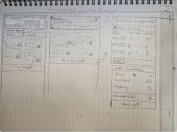
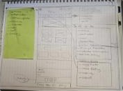
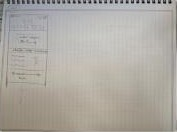
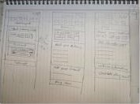
From wireframe to redesign
After the sketches I built a low-fidelity wireframe of the homepage, then redesigned every page. Each board puts the original torontocupcake.com page beside the redesign, with notes on what changed and why.
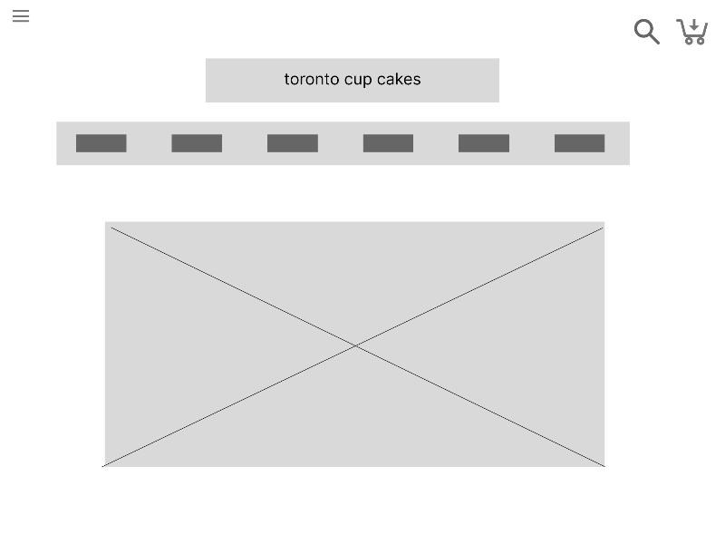
One header instead of seven logos and a hamburger, filter chips, large photography with one Add button, “Build a box”, and a dark footer.
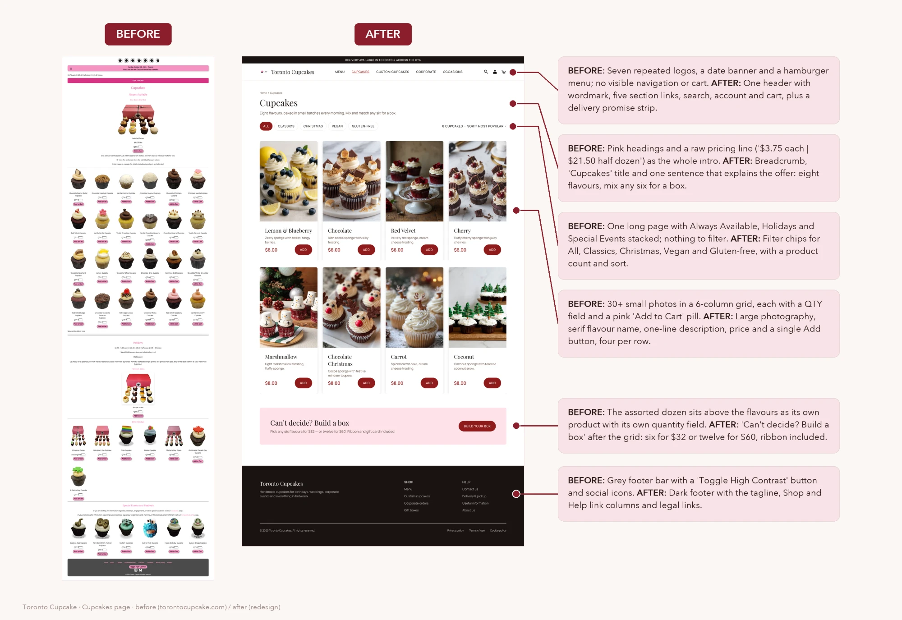
A delivery promise strip and one header with five sections, search, account and cart; a breadcrumb, a title and one sentence that explains the offer.
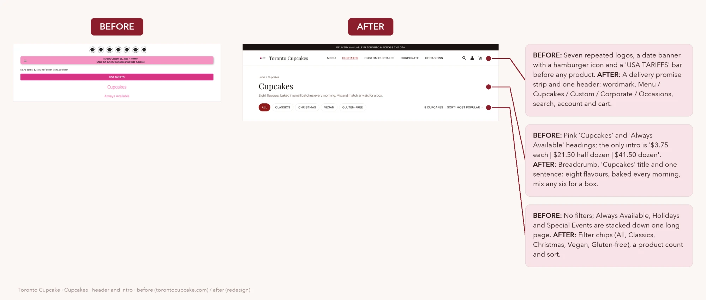
24 tiny cut-out photos with QTY fields became eight flavours with large photos, a one-line description, the price and a single Add button.
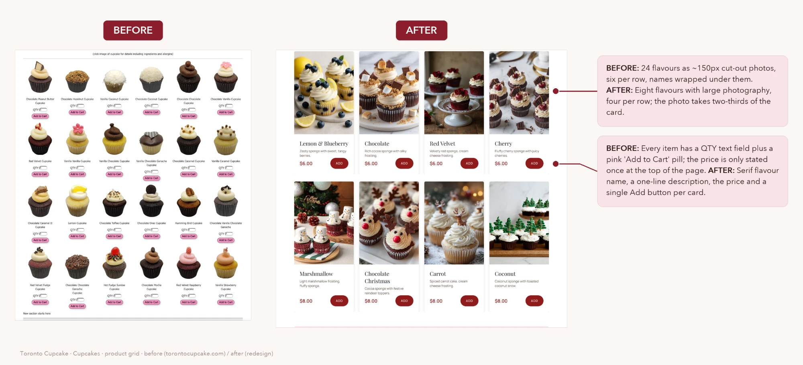
“One Dozen One Click” at the top became “Can’t decide? Build a box” after the flavours, with two clear price points.
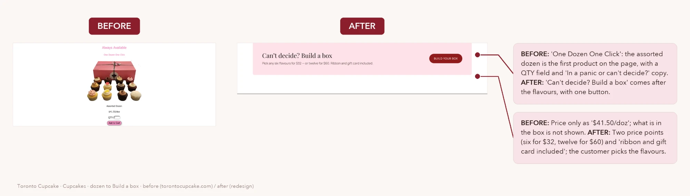
Five things I fixed from the first prototype
Crowded header
The logo, a large title, the nav bar and the icons sat on three separate rows, pushing the products below the fold.
Inconsistent spacing
Cards and columns were placed by hand, so edges drifted a few pixels from screen to screen.
Too many fonts
Ten font families and thirteen sizes, and the decorative heading font was hard to read at small sizes.
Checkout errors
The checkout button showed $6.78 while the total was $9.04, and the two-item cart and checkout disagreed.
Copy issues
Labels like YOUR CARD and VIEW CARD meant cart, and CUSTOME CUPCAKES was misspelled.
Tokens, not guesses
To fix the inconsistencies from the first prototype, I built the design on Figma variables instead of hand-picked values. Because every screen uses these tokens, changing the brand direction later updates the whole site at once.
Primitives feed semantic tokens such as background, action, text and border, plus a see-through scrim so photos stay visible under dark bands.
80px page margins, a 24px gutter and a small radius scale for a classic bakery feel.
Bakery Classic
I explored seven visual directions and chose Bakery Classic: a long-scroll homepage in espresso and crimson with a soft pink accent. Every page shares the same header, footer and tokens, and each nav item has its own page.
Photo hero, how we bake, our cupcakes, how ordering works, offers, price list, journal, reviews and the store.
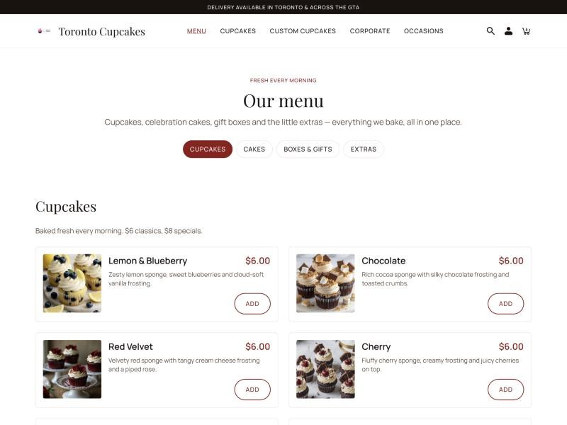
Every item has a photo, grouped into Cupcakes, Cakes, Boxes and gifts, and Extras.
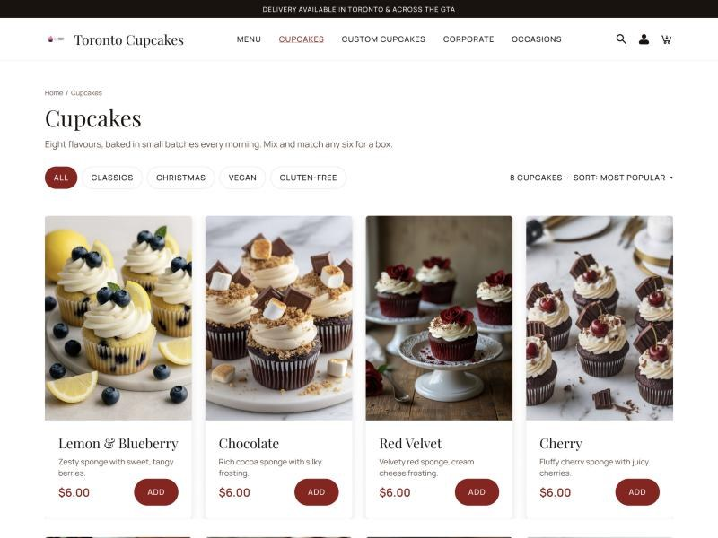
Filter chips for categories and dietary needs, and product cards whose price and Add button always line up.
- One aligned header: logo, nav and actions in a single row
- 80px page margins and a 4-pt spacing scale
- Two fonts instead of ten
- Product cards with price and action always aligned
- Picture menu grouped by Cupcakes, Cakes, Boxes & gifts, Extras
- Dark photo bands use a scrim token so images stay visible
- Frames for every nav item: Menu, Cupcakes, Custom Cupcakes, Corporate, Occasions
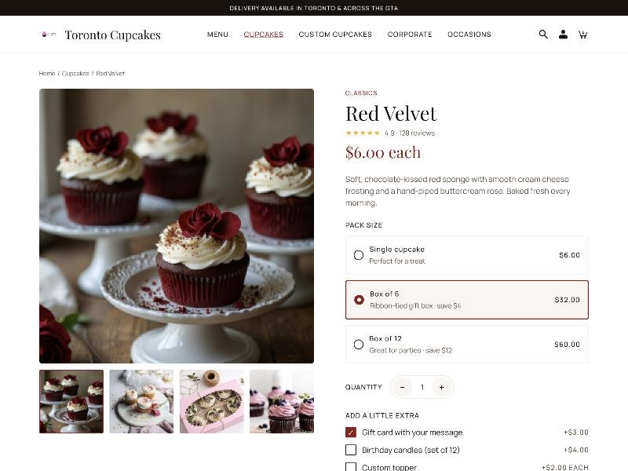
Choose your pack
Pick a pack size, quantity and extras, then Add to cart.
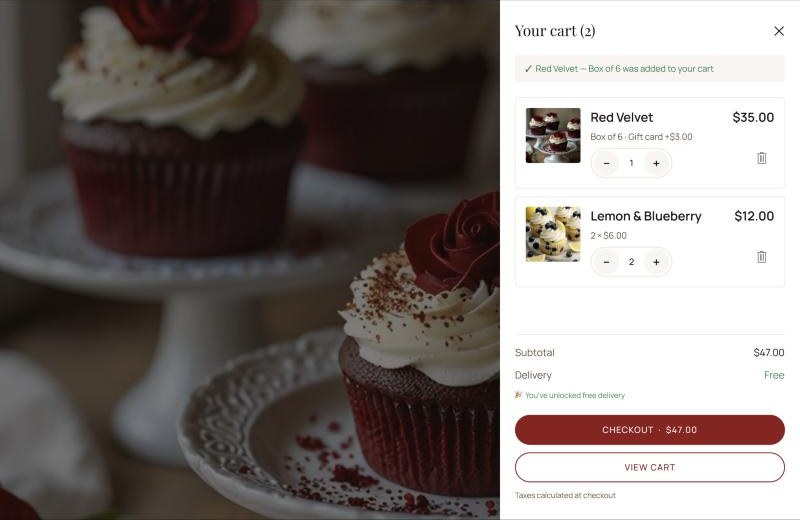
Instant confirmation
A drawer confirms the item and shows the subtotal.
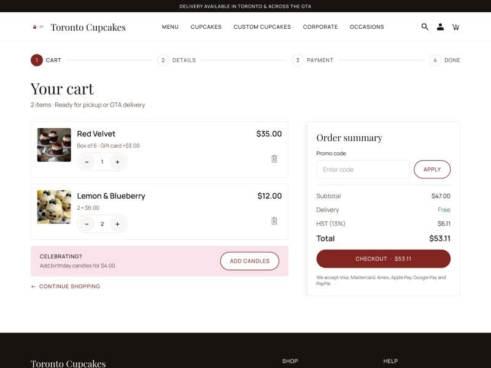
Review the order
Edit quantities, apply a promo code and review the order summary.
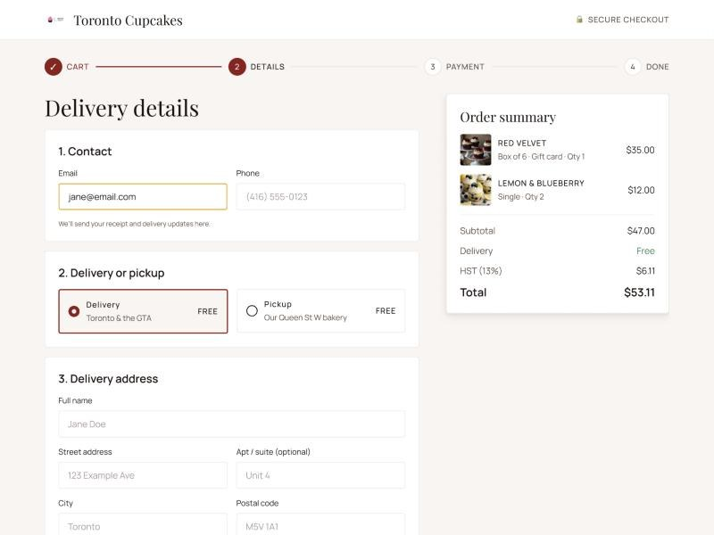
Pick a time slot
Contact details, delivery or pickup, address, and a date and time slot.
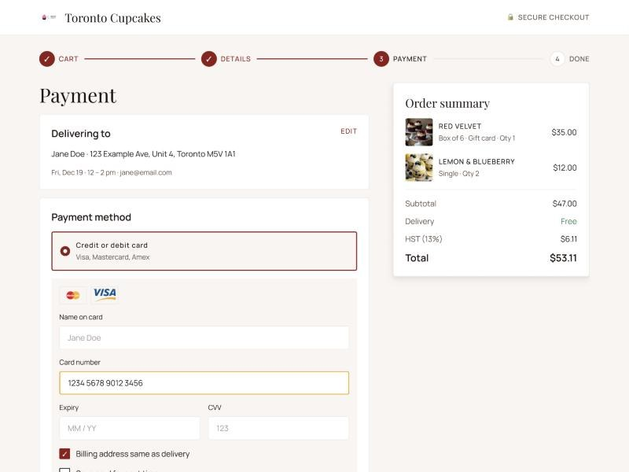
Pay your way
Card, Apple Pay, Google Pay or PayPal, plus a gift card message.
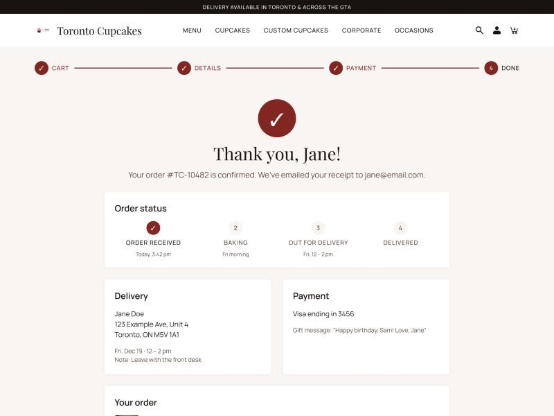
Track it
The order number, a status tracker and the delivery details.
The test I'll run
A usability test with five people who order baked goods for events, using Shirin's scenario as the task: order 2 chocolate, 1 vanilla and 1 gluten-free lemon cupcake for delivery tomorrow, then check the order status. I'll iterate on the checkout first, where the first prototype had the most problems.
Did they complete the order?
How long each step takes.
Wrong turns and mistakes.
Rated after each step.
Gaps found & what's next
Comparing the research with the final screens surfaced a few gaps worth fixing before testing.
Scenario products missing
Shirin orders vanilla and gluten-free lemon — neither exists on the menu yet. Add them, with dietary tags.
Mixed box
She wants several flavours in one order. Add a “Build a mixed box” option on the product page.
Guest checkout
The task flow has a Guest vs Sign-in decision that the prototype skips. Add it before Delivery.
My orders & log out
The flow ends with checking order status and logging out. Add a My Orders page in the account area.
Delivery areas page
Card sort grouped Delivery with service areas (Toronto, Ajax, Aurora, Brampton…). Add it to the footer IA.
Product pages
Only Red Velvet has a product page. Duplicate it for every flavour.
What I learned
The redesign turned a hard-to-scan bakery site into a guided ordering experience: clear categories, five focused navigation items, consistent tokens and a checkout whose totals match at every step.
This project taught me how card sorting shapes navigation, and how a design system makes a whole site consistent and quick to change. With the timeline I had, I prioritized browsing and the core purchase journey. With more time I would test the custom order and corporate quote flows with real customers.